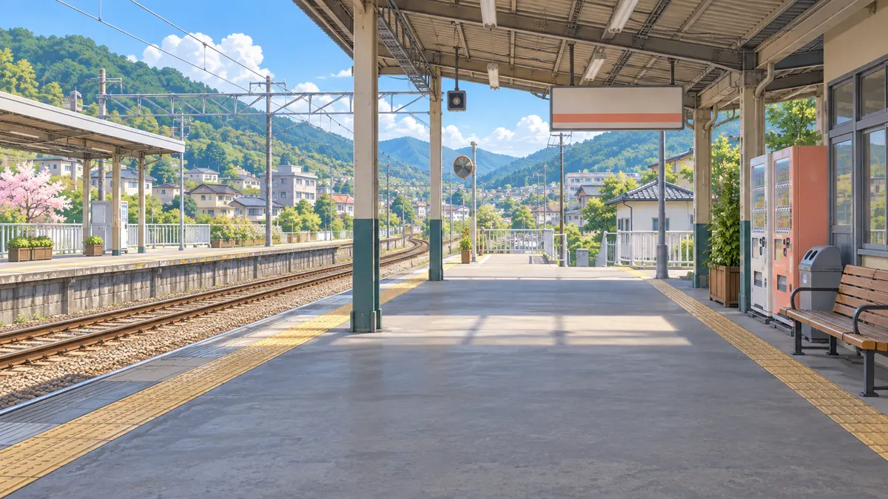
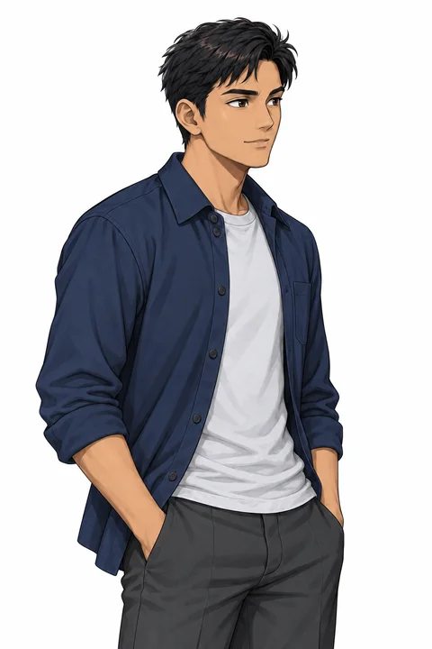
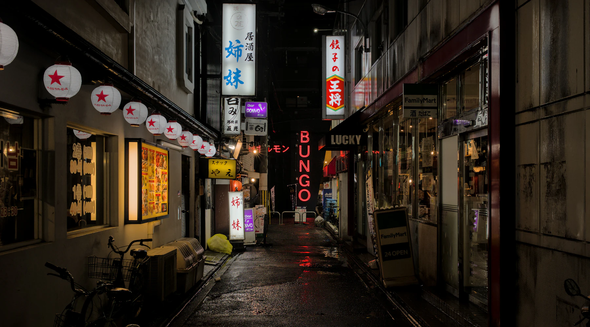
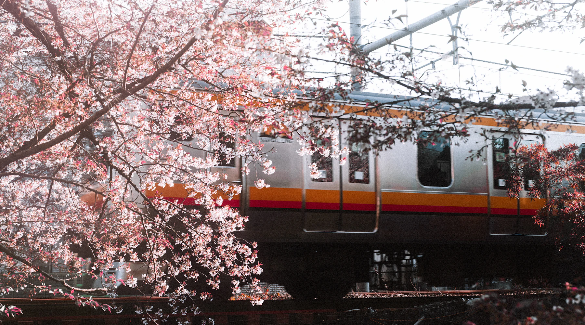
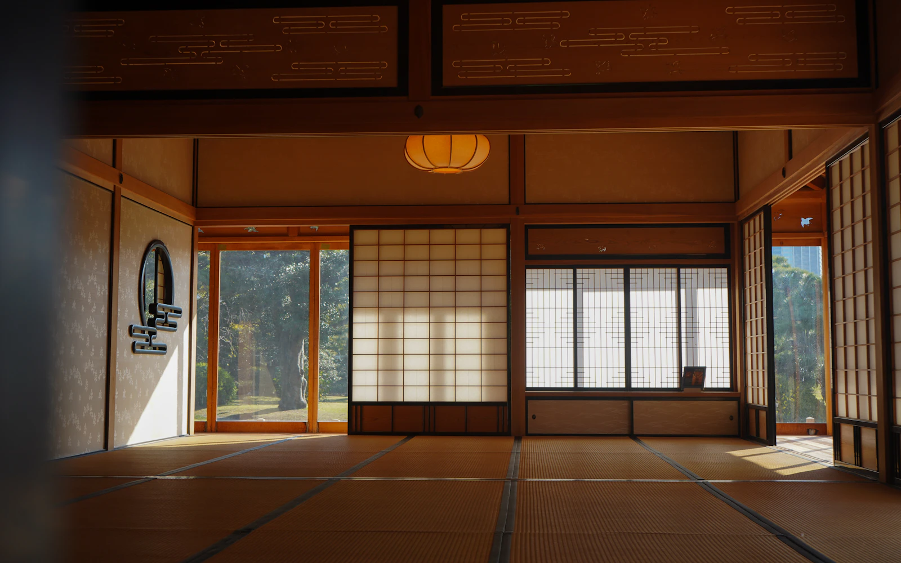

きっぷ東京 → 大阪
?
?
!
A, sumimasen!
lho… kok dia
minta maaf?
minta maaf?
SALAH PAHAM?

📍
SITUASIMau nanya jalan ke orang asing
Sumimasen, eki wa doko desu ka.
“Permisi, stasiunnya di mana?”juga buat manggil pelayan

🚃
SITUASINggak sengaja nyenggol orang di kereta
A, sumimasen!
“Aduh, maaf!”maaf ringan, sehari-hari

🧤
SITUASIBarangmu jatuh, diambilin orang
A, sumimasen.
“Makasih ya!”rasanya: “maaf jadi ngerepotin”
ごめんなさい
TEMANkeluarga
すみません
UMUMsehari-hari
申し訳ありません
ATASANpelanggan
↓ MAKIN SOPAN ↓
📌 simpan biar nggak lupa